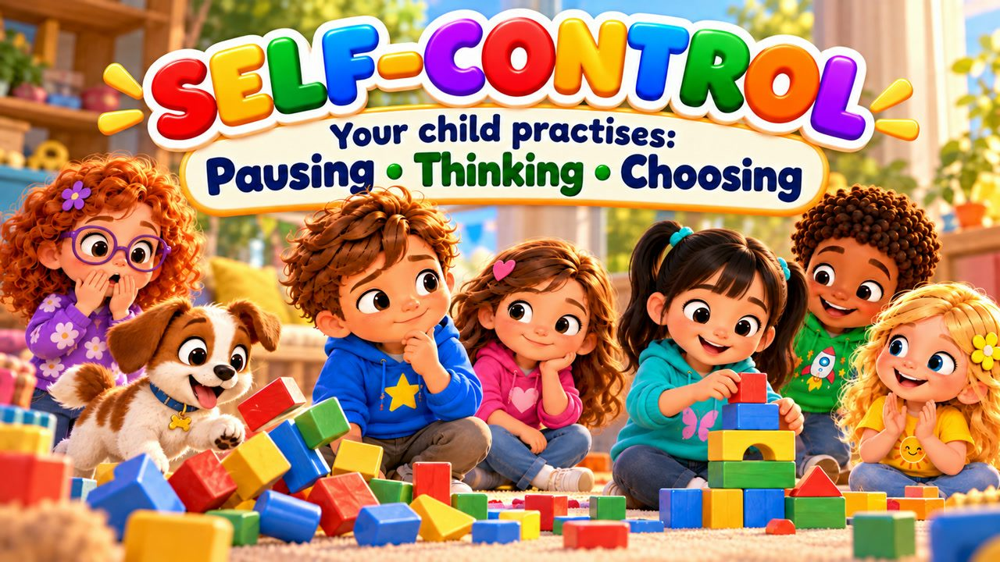
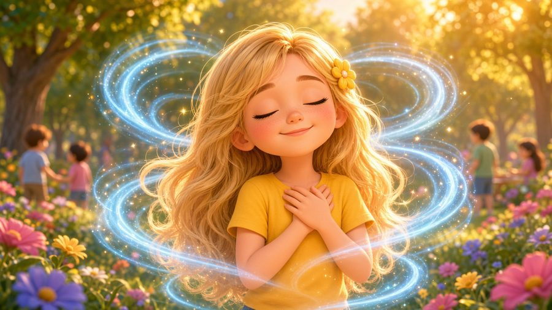
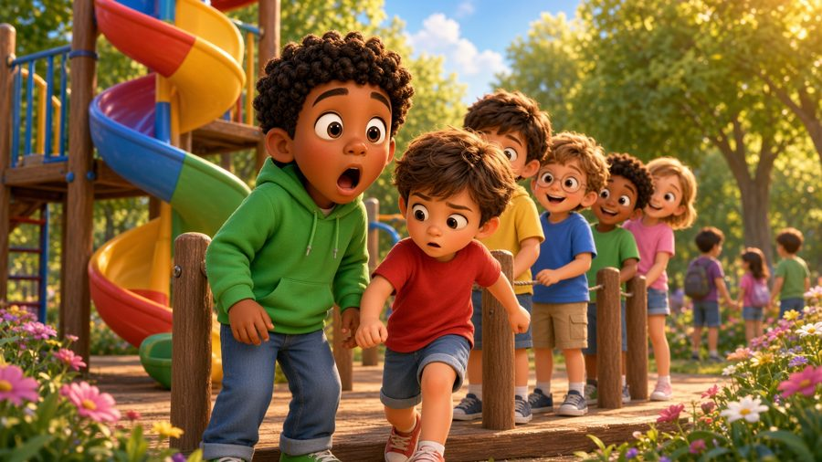

Stop, Think, Choose!
A self-control song for kids! ✋ Sing along with Max, Mia, Jay, Lily, Rosie and Buddy the puppy as they learn to STOP, take a breath, THINK and CHOOSE what to do — even when feelings are big.
"Stop, Think, Choose!" is a sing-along self-control song for kids. Buddy knocks down Max's block tower, Mia wants a cookie right now, and someone cuts in front of Jay at the slide — and each time they pause, breathe and pick a good choice. With karaoke lyrics on screen, it's perfect for preschool, kindergarten and early elementary kids (ages 3–8), at home or in the classroom.

▶💡 Why this skill matters: self-control
Self-control — pausing before acting — is one of the strongest predictors of how well children do at school and in friendships. It doesn’t mean never feeling angry or excited; it means choosing what to do next. Practise “stop, think, choose” in games (like freeze dance) and praise the moments your child pauses on their own.
👨👩👧 What your child learns
- Pausing before acting or shouting
- Calming down with one deep breath
- Thinking "What happens next?"
- Choosing words instead of grabbing or pushing
- Big feelings are okay — we choose what we do
💬 Talk about it after the song
- When did you stop and make a good choice?
- What can you do instead of shouting or grabbing?
🏅 Quiz & Certificate
Watched the song together? Now read each question aloud — your child points to the right picture. Answer all 6 questions and your child earns a printable certificate!
🔒 The name is only used to draw the certificate on your device. We don't save or send anything.
You did it! 🎉
All 6 answers are right! Type your child's name to make the certificate.
🖨️ Free printables
Free for home and classroom use. Print on A4 or Letter paper.
🖼️ Scenes from the song





🎵 More songs


🎤 Lyrics – Stop, Think, Choose!
Wait!
Before I do it...
Before I say it...
I can stop!
Take a breath...
Think...
And choose!
Max was building with his blocks,
Higher, higher, to the top!
Buddy came running through the room...
BUMP!
Down went the tower —
BOOM, BOOM, BOOM!
Max felt angry right away,
He almost shouted,
"GO AWAY!"
But then he stopped.
One little breath...
"What could I do
instead?"
I can stop
before I act.
I can think:
"What happens next?"
I've got choices
I can use.
Stop...
Think...
Then I choose!
STOP!
THINK!
CHOOSE!
I've got choices
I can use!
STOP!
THINK!
CHOOSE!
I can choose
what I will do!
Take a breath!
Think it through!
What's a good choice
I can choose?
My feelings can be big...
But I decide
what I will do!
STOP!
THINK!
CHOOSE!
Mia saw some cookies
on a plate.
"Ooh! I want one!
They look great!"
She reached her hand...
then stopped to think:
"Did someone say
that I could take one?"
She pulled her hand back,
then went to ask:
"Can I have a cookie, please?"
"After lunch,"
Grandma Nell replied.
"Okay!"
Mia smiled
and stepped aside.
She wanted one,
but she could wait.
She made a choice
that felt just great!
I can stop
before I act.
I can think:
"What happens next?"
I've got choices
I can use.
Stop...
Think...
Then I choose!
STOP!
THINK!
CHOOSE!
I've got choices
I can use!
STOP!
THINK!
CHOOSE!
I can choose
what I will do!
Take a breath!
Think it through!
What's a good choice
I can choose?
My feelings can be big...
But I decide
what I will do!
STOP!
THINK!
CHOOSE!
Jay was waiting for the slide,
Another child stepped in the line.
Jay wanted to push ahead:
"Hey!
I was waiting!"
But instead...
He stopped,
took one slow breath,
and thought about
what he could say next.
"Excuse me,
I was waiting here."
The other child said,
"Oh! Sorry!"
And moved behind.
No pushing.
No shouting.
Just words
that worked out fine!
Want to grab it?
STOP!
Want to shout?
BREATHE!
What comes next?
THINK!
Do I have choices?
YES, I DO!
Can I use my words?
YES, I CAN!
Can I walk away?
YES, I CAN!
Can I ask for help?
YES, I CAN!
So what do I do?
STOP!
THINK!
CHOOSE!
Self-control doesn't mean
I never feel excited.
It doesn't mean
I never feel angry.
It means...
I don't have to do
the very first thing
my feelings tell me to do.
I can pause.
I can think.
And I can choose.
STOP!
THINK!
CHOOSE!
I've got choices
I can use!
STOP!
THINK!
CHOOSE!
I can choose
what I will do!
Take a breath!
Think it through!
Find a choice
that's good for you!
I can wait!
I can speak!
I can ask!
I can leave!
I can choose
what happens next!
STOP!
THINK!
CHOOSE!
My feelings belong to me...
And I can choose
what I will do!
Before I act...
I can pause.
Before I shout...
I can breathe.
Before I choose...
I can think.
STOP...
THINK...
CHOOSE!